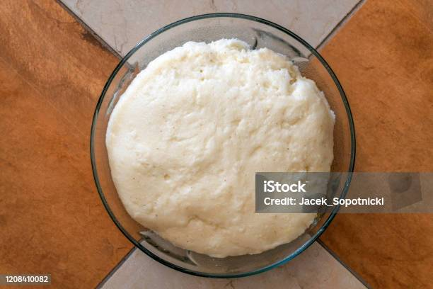

Ugali

Description
Ugali is a dense maize flour dish that is a staple in Kenyan cuisine, often served with vegetables or meat.
Ingredients
- 2 cups maize flour
- 4 cups water
- Salt (Optional)
Steps
- Boil water in a pot.
- Gradually add maize flour while stirring to avoid lumps
- Let it cook for a few more minutes, then serve.
Home